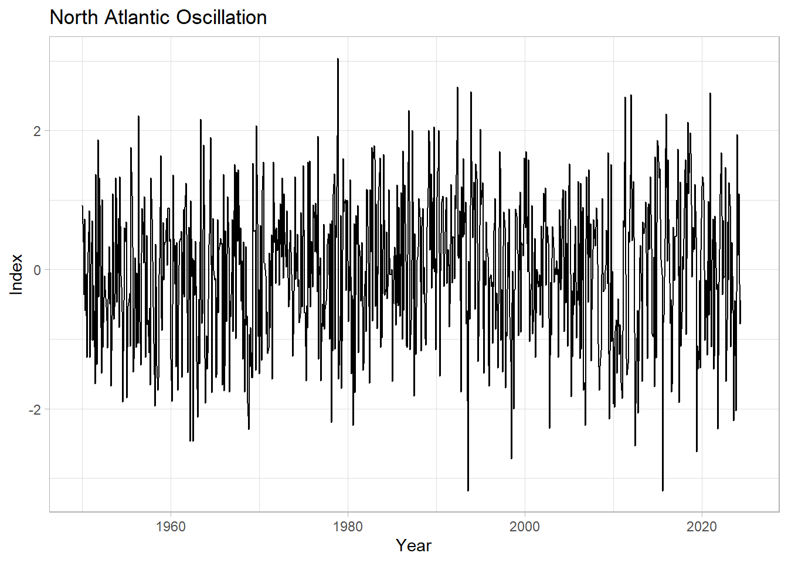
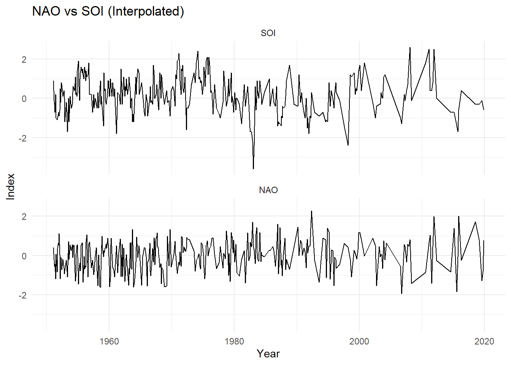

4.1 Measures of association: NAO vs SOI
In this notebook we explore the relationship between two well-known climate indices, the Southern Oscillation Index (SOI) and the North Atlantic Oscillation (NAO) index. The NAO and SOI index have been alleged to show some relationship, albeit a subtle one, in some seasons/epochs. Specifically, we will explore:
- effects of trends
- effects of autocorrelation
- various measures of association
- various methods of establishing the significance of a relationship
4.1.1 R packages
- We will use
tidyversefor data formating/manipulation as well as for plotting - We will also make use of
reshape2for data formatting astrochronwill provide a test of correlation significance
4.1.2 Data Wrangling
- The NAO data are from NCEP
- The SOI data ship with Pyleoclim, which houses a few datasets that make it easy to experiment with real-world geoscientific timeseries. We’ll grab the data directly from the github page.
#Load SOI
SOI <- read.table("https://github.com/LinkedEarth/Pyleoclim_util/raw/master/pyleoclim/data/soi_data.csv", sep = ",", header = TRUE, skip = 1)
head(SOI)## Date Year Value
## 1 195101 1951.000 1.5
## 2 195102 1951.083 0.9
## 3 195103 1951.167 -0.1
## 4 195104 1951.250 -0.3
## 5 195105 1951.333 -0.7
## 6 195106 1951.417 0.2#Load NAO
NAO <- read.table('https://www.cpc.ncep.noaa.gov/products/precip/CWlink/pna/norm.nao.monthly.b5001.current.ascii.table',header = TRUE, fill=TRUE, row.names = NULL)
head(NAO)## row.names Jan Feb Mar Apr May Jun Jul Aug Sep Oct Nov
## 1 1950 0.92 0.40 -0.36 0.73 -0.59 -0.06 -1.26 -0.05 0.25 0.85 -1.26
## 2 1951 0.08 0.70 -1.02 -0.22 -0.59 -1.64 1.37 -0.22 -1.36 1.87 -0.39
## 3 1952 0.93 -0.83 -1.49 1.01 -1.12 -0.40 -0.09 -0.28 -0.54 -0.73 -1.13
## 4 1953 0.33 -0.49 -0.04 -1.67 -0.66 1.09 0.40 -0.71 -0.35 1.32 1.04
## 5 1954 0.37 0.74 -0.83 1.34 -0.09 -0.25 -0.60 -1.90 -0.44 0.60 0.40
## 6 1955 -1.84 -1.12 -0.53 -0.42 -0.34 -1.10 1.76 1.07 0.32 -1.47 -1.29
## Dec
## 1 -1.02
## 2 1.32
## 3 -0.43
## 4 -0.47
## 5 0.69
## 6 0.17Note the latter arguments to read.table(). fill=TRUE adds NA values where data is missing at the end of the file while row.names=NULL employs the row names of the file as the first column of the data.frame.
4.1.3 Format and plot the NAO data
The melt() function from reshape2 is handy for reorganizing data from wide to long format. In this case we have a 13-column data.frame with a Year column and a column for each month. melt() reformats this data to 3 columns: Year, month, and value.
Next we use lubridate to convert the Year+month to a datetime object. The data are provided in monthly averages, so we assign the values to the 15th of each month.We utilize dplyr to format the data for plotting.
## datetime value
## 1 1950-01-15 0.92
## 2 1950-02-15 0.40
## 3 1950-03-15 -0.36
## 4 1950-04-15 0.73
## 5 1950-05-15 -0.59
## 6 1950-06-15 -0.06Now we use ggplot to look at the timeseries
ggplot(NAO, aes(x=datetime, y=value)) +
geom_line() +
labs(title = "North Atlantic Oscillation",
y="Index",
x="Year") +
theme_minimal()## Warning: Removed 7 rows containing missing values or values outside the scale range
## (`geom_line()`).
4.1.4 Merge the SOI data into the NAO data.frame
Again we use lubridate to format the datetime portion.
Next, we create a new data.frame with evenly space time using seq. Our final data.frame will merge the 3 unique datetime series from NAO, SOI, and the evenly spaced series into a single column.
Let’s take a look at the top and bottom of the new data.frame
SOI <- SOI %>%
mutate(datetime = as.Date(format(date_decimal(Year), "%Y-%m-%d"))) %>%
rename(SOI = Value) %>%
dplyr::select(datetime, SOI)
head(SOI)## datetime SOI
## 1 1951-01-01 1.5
## 2 1951-01-31 0.9
## 3 1951-03-02 -0.1
## 4 1951-04-02 -0.3
## 5 1951-05-02 -0.7
## 6 1951-06-02 0.2newDateDF <- data.frame(datetime = as.Date(round(seq(as.numeric(min(SOI$datetime)),
as.numeric(max(SOI$datetime)),
length.out=69*12),5)))
SOInewDate <- merge.data.frame(SOI, newDateDF, all = T)
dfAll <- merge.data.frame(NAO, SOInewDate, all = T)
#first 20
head(dfAll,n = 20)## datetime value SOI
## 1 1950-01-15 0.92 NA
## 2 1950-02-15 0.40 NA
## 3 1950-03-15 -0.36 NA
## 4 1950-04-15 0.73 NA
## 5 1950-05-15 -0.59 NA
## 6 1950-06-15 -0.06 NA
## 7 1950-07-15 -1.26 NA
## 8 1950-08-15 -0.05 NA
## 9 1950-09-15 0.25 NA
## 10 1950-10-15 0.85 NA
## 11 1950-11-15 -1.26 NA
## 12 1950-12-15 -1.02 NA
## 13 1951-01-01 NA 1.5
## 14 1951-01-15 0.08 NA
## 15 1951-01-31 NA 0.9
## 16 1951-02-15 0.70 NA
## 17 1951-03-02 NA -0.1
## 18 1951-03-15 -1.02 NA
## 19 1951-04-02 NA -0.3
## 20 1951-04-15 -0.22 NA## datetime value SOI
## 2181 2023-05-15 0.39 NA
## 2182 2023-06-15 -0.58 NA
## 2183 2023-07-15 -2.17 NA
## 2184 2023-08-15 -1.16 NA
## 2185 2023-09-15 -0.44 NA
## 2186 2023-10-15 -2.03 NA
## 2187 2023-11-15 -0.32 NA
## 2188 2023-12-15 1.94 NA
## 2189 2024-01-15 0.21 NA
## 2190 2024-02-15 1.09 NA
## 2191 2024-03-15 -0.21 NA
## 2192 2024-04-15 -0.78 NA
## 2193 2024-05-15 -0.44 NA
## 2194 2024-06-15 NA NA
## 2195 2024-07-15 NA NA
## 2196 2024-08-15 NA NA
## 2197 2024-09-15 NA NA
## 2198 2024-10-15 NA NA
## 2199 2024-11-15 NA NA
## 2200 2024-12-15 NA NA4.1.5 Interpolation
Now we will use the evenly space datetime to interpolate NAO and SOI:
- we restrict our time interval to that with data from both sources
- we perform linear interpolation of each index
- we extract the data for only the interpolated values, creating evenly spaced series
dfAll <- dfAll %>%
slice(13:2505) %>%
mutate(NAO = approx(datetime, value, datetime)$y) %>%
mutate(SOI = approx(datetime, SOI, datetime)$y) %>%
select(-value) %>%
slice(which(datetime %in% newDateDF$datetime)) %>%
drop_na()
head(dfAll)## datetime SOI NAO
## 1 1951-01-31 0.9 0.40000000
## 2 1951-03-02 -0.1 -0.22142857
## 3 1951-04-02 -0.3 -0.55548387
## 4 1951-05-02 -0.7 -0.42966667
## 5 1951-06-02 0.2 -1.19967742
## 6 1951-07-02 -1.0 0.06566667## datetime variable value
## 1 1951-01-31 SOI 0.9
## 2 1951-03-02 SOI -0.1
## 3 1951-04-02 SOI -0.3
## 4 1951-05-02 SOI -0.7
## 5 1951-06-02 SOI 0.2
## 6 1951-07-02 SOI -1.0Now we can convert to a long format for plotting
## datetime variable value
## 1 1951-01-31 SOI 0.9
## 2 1951-03-02 SOI -0.1
## 3 1951-04-02 SOI -0.3
## 4 1951-05-02 SOI -0.7
## 5 1951-06-02 SOI 0.2
## 6 1951-07-02 SOI -1.0ggplot(allLong, aes(x=datetime, y=value, group=variable)) +
geom_line() +
facet_wrap(~variable, ncol=1) +
labs(title = "NAO vs SOI (Interpolated)",
y="Index",
x="Year") +
theme_minimal()
4.1.6 Correlation
Both calls use lapply to repeat a correlation test 3 times using different methods: “pearson”, “spearman”, and “kendall”
The second call employs a Monte Carlo simulation from the astrochron package. The method implemented is described in Ebisuzaki (1997).
## Warning in cor.test.default(dfAll$NAO, dfAll$SOI, method = x): Cannot compute
## exact p-value with ties## [[1]]
##
## Pearson's product-moment correlation
##
## data: dfAll$NAO and dfAll$SOI
## t = -1.1793, df = 353, p-value = 0.2391
## alternative hypothesis: true correlation is not equal to 0
## 95 percent confidence interval:
## -0.16565406 0.04171388
## sample estimates:
## cor
## -0.06264618
##
##
## [[2]]
##
## Spearman's rank correlation rho
##
## data: dfAll$NAO and dfAll$SOI
## S = 8004173, p-value = 0.1673
## alternative hypothesis: true rho is not equal to 0
## sample estimates:
## rho
## -0.07346052
##
##
## [[3]]
##
## Kendall's rank correlation tau
##
## data: dfAll$NAO and dfAll$SOI
## z = -1.3688, p-value = 0.1711
## alternative hypothesis: true tau is not equal to 0
## sample estimates:
## tau
## -0.04938327#Methods: 1-pearson, 2-spearman, 3-kendall
lapply(c(1,2,3), function(x) surrogateCor(dfAll$NAO,dfAll$SOI,nsim = 10000,cormethod = x, genplot = F, verbose = F))## [[1]]
## datcor pvalue
## 1 -0.06264618 0.3093
##
## [[2]]
## datcor pvalue
## 1 -0.07346052 0.2318
##
## [[3]]
## datcor pvalue
## 1 -0.04938327 0.2351All the methods tested show similarly weak evidence for significant correlations.